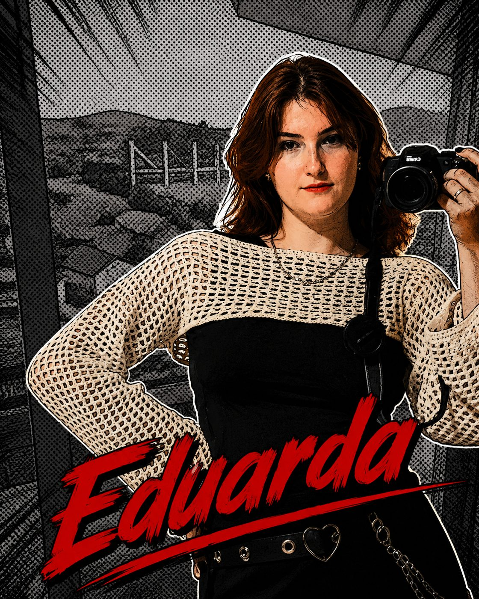
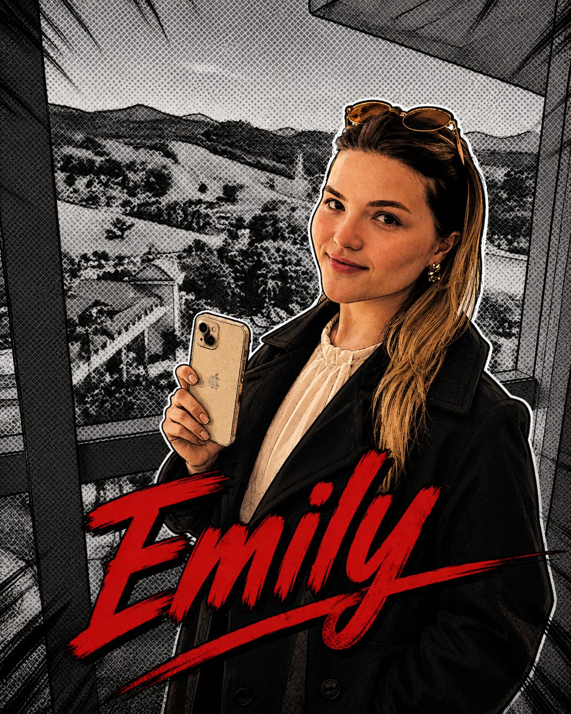
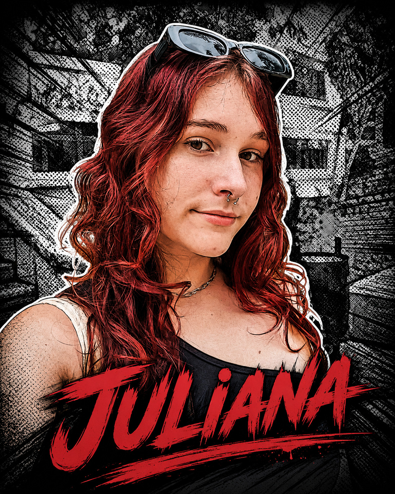

DESIGN EXPERIMENTAL · Projeto de bolsa · Edição 01
estética pop punk · anos 2000 · handmade
Duas bolsas. Uma declaração. Inspiradas na era de ouro de Avril Lavigne (2002–2007), o projeto une estética pop punk, materiais sustentáveis e produção 100% handmade para um público jovem urbano que recusa o convencional.
contexto
pop punk · skate · identidade · MTV
Os anos 2000 marcaram uma geração em transição — do analógico para o digital. Jovens de 15 a 28 anos vivenciaram o surgimento das redes sociais, o MP3, e uma explosão de subculturas como emo, punk, skate e grunge. A moda virou manifesto.
Avril surgiu em 2002 quebrando o pop convencional. Seu estilo misturava flanela xadrez, gravatas, correntes, tênis de skate e spikes — e influenciou uma geração inteira a se vestir como forma de rebeldia e identidade.
O movimento misturava a energia crua do punk com melodias pop acessíveis. Bandas como Simple Plan, Sum 41 e Good Charlotte dominavam a MTV. A estética era marcada por preto, rosa, correntes, estrelas e xadrez.
O skate deixou de ser apenas esporte e virou símbolo de pertencimento cultural. A bolsa Sk8er homenageia diretamente essa fusão entre moda alternativa e cultura urbana que definiu o início dos anos 2000.
A MTV era o principal canal de disseminação de tendências. Videoclipes como Sk8er Boi e Complicated mostravam ao mundo uma estética nova — autêntica, rebelde e inconfundível.
O projeto prioriza materiais veganos e sustentáveis. Courino sintético, forro reaproveitado e adereços reutilizáveis — porque ser punk também é rejeitar o consumo descartável.
quem usa
Camila, 20 anos · São Paulo · Design de Moda
20 anos · Estudante de Design de Moda · SP
"Não me identifico com o que tem no mercado — tudo é igual, sem personalidade."
"Quero uma bolsa que diga quem eu sou antes de eu abrir a boca."
bolsa um
courino · versátil · quadrada · anos 2000
A Sk8er é uma bolsa de mão quadrada e versátil, inspirada diretamente na cultura do skate e no visual icônico de Avril Lavigne no início dos anos 2000. Robusta, atitudinal e personalizável — feita para quem não combina com o padrão.
O nome referencia Sk8er Boi, single de 2002 que virou hino de uma geração. A silhueta estruturada remete às bolsas escolares e malas de mão dos anos 2000, ressignificadas com elementos punk.
Para quem vai a shows, garimpa em brechós, toca em banda ou simplesmente recusa a ideia de que moda precisa ser igual para todo mundo. A Sk8er é o acessório de quem tem atitude e leva a sua personalidade com ela.
bolsa dois
meia-lua · correntes · coração partido · xadrez rosa
A Fallen é uma bolsa meia-lua de ombro com alma dark-romântica. O coração xadrez partido na frente simboliza a dualidade que define o pop punk: doce por fora, feroz por dentro. Correntes de estrelas completam uma silhueta inconfundível.
O nome vem da dualidade dos anos 2000 — queda e reconstrução, romantismo e rebeldia. O coração partido rasgado na frente é uma metáfora visual direta: exposto, indomável, autêntico.
Para quem carrega o coração na sleeve — literalmente. A Fallen é para as que não têm medo de ser muito. Dark e romântica ao mesmo tempo, como toda boa música pop punk.
"Não é moda.
É uma declaração." — Fallen · Bolsa Avril Lavigne, 2025
comparativo
duas bolsas · uma identidade · escolha a sua
processo criativo
costura, montagem, erros e acertos — tudo por trás das bolsas
ver bastidores ★o grupo
PROJETO: DESIGN EXPERIMENTAL · 2026

Eduarda Chelest

Emilly
Ezequiéll
Julia Alice

Juliana Cecilia